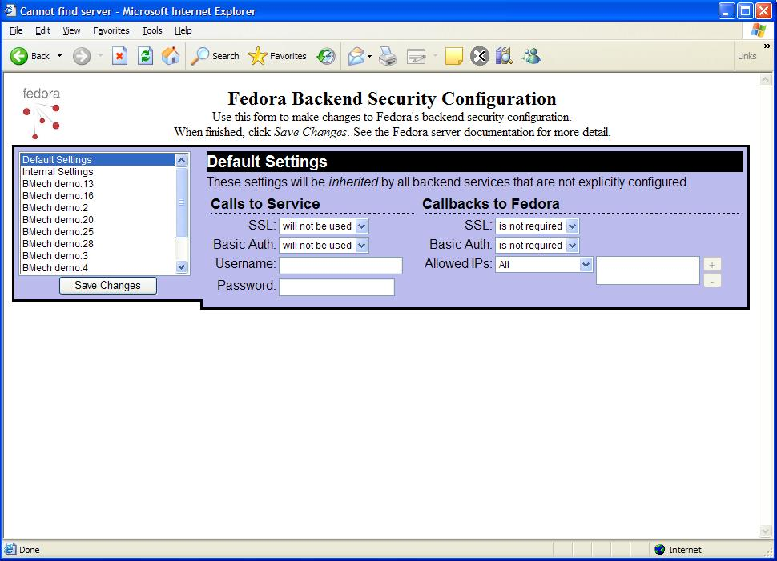
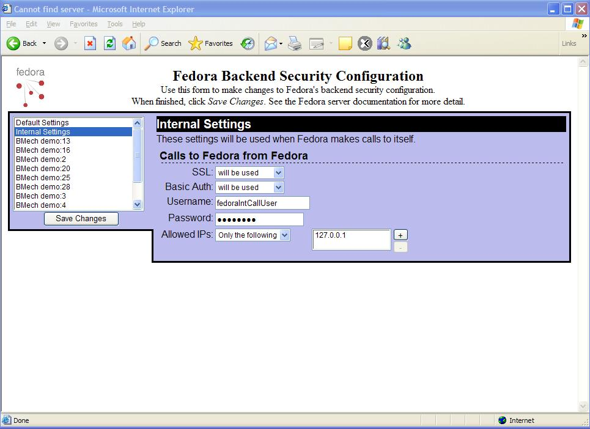
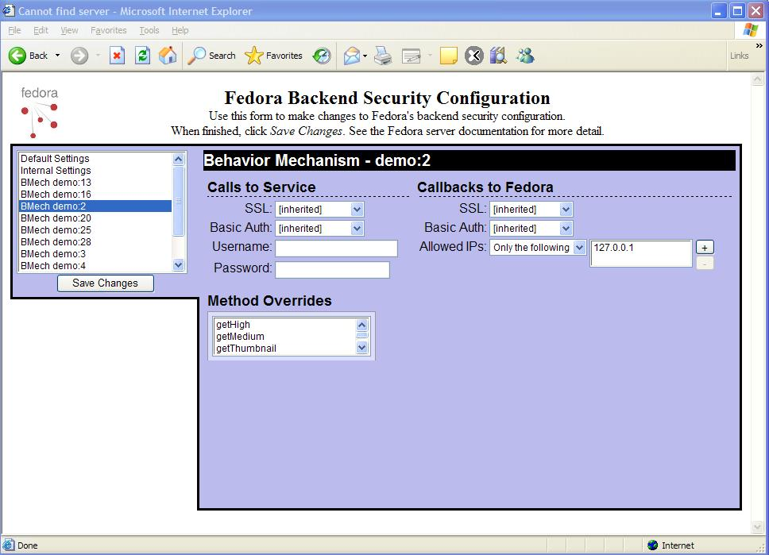
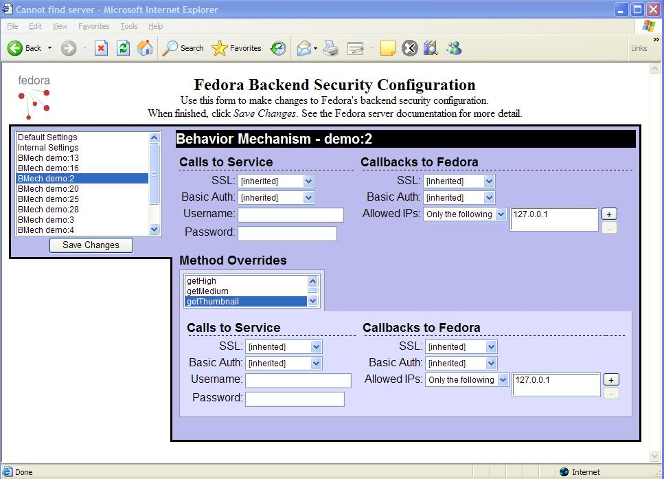
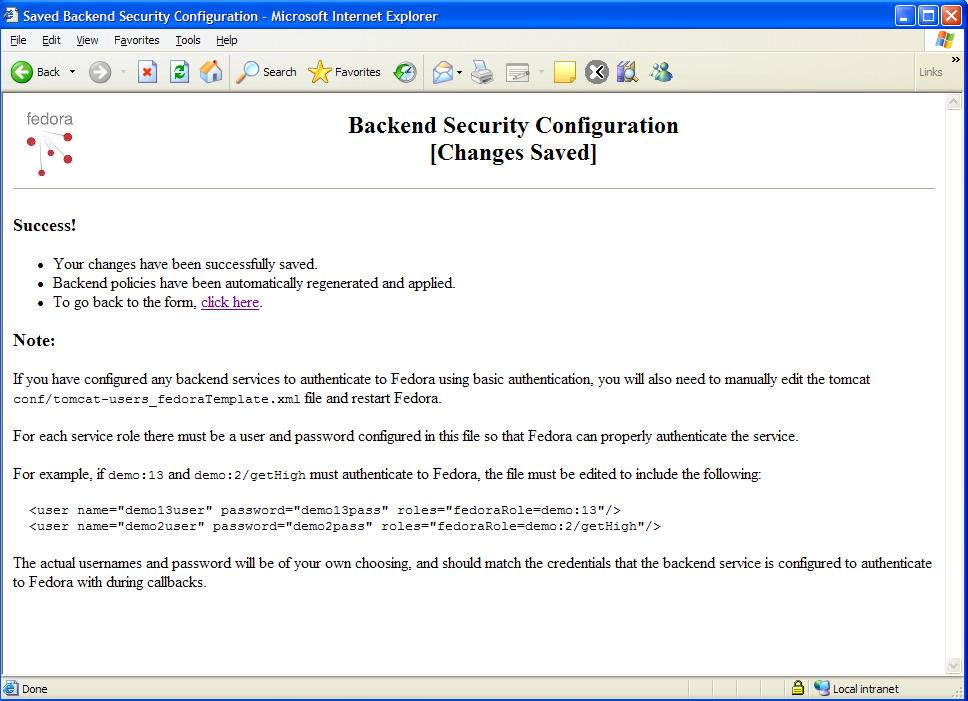

Disseminators represent a pair of specialized digital objects known as Behavior Definition(bdef) objects and Behavior Mechanism(bmech) objects. The bdef object represents a high-level abstract description of the set of services provided by the disseminator. The bmech object provides the executable code in the form of an external web service that actually performs the set of services. The term "backend services" is used to describe the set of web services defined by all bmech objects in a given repository. In addition to providing enhanced security for APT-A and API-M, Fedora 2.1b also enables enhanced security for controlling how backend services communicate with the Fedora server. This document describes how to configure security for backend services and provides an overview of the beSecurity Configuration Tool used in creating the beSecurity configuration file.
Once basic authentication or SSL support is enabled for either the Fedora server or backend service or both, there are multiple scenarios that require authentication between the fedora server and backend service and/or between the backend service and fedora. Since the security capability of backend services may vary, the beSecurity configuration file allows you to configure these properties individually for the Fedora server and for each backend service. The beSecurity configuration file is an xml-encoded file containing information about the security configuration of the Fedora server and for each backend service. The XML Schema for the beSecurity file can be found at http://www.fedora.info/definitions/1/0/api/beSecurity.xsd.
The beSecurity configuration file consists of a sequence of "serviceSecurityDescription" elements. Each "serviceSecurityDescription" element can contain a series of attributes that define the security configuration for the service. These attributes include the following:
Note that there is no "callbackUsername" or "callbackPassword" attribute used when the backend service must authenticate with the Fedora server. It is the responsibility of the administrator of the backend service to coordinate with the Fedora server administrator to ensure that the username and password being used by the backend service correspond to a valid username and password recognized by the Fedora server. One method to accomplish this is to use the existing username of fedoraIntCallUser for all backend services. A more secure method would be to add individual usernames for each backend service and then add policies that further restrict the capabilities for this set of usernames. If backend servcies are configured to authenticate with the Fedora server, you must also ensure that the "role" specified in the beSecurity file is also specified for the associated username in the tomcat-users file. [This section may change depending on what we decide on how to handle updating of tomcat-users file....] If your backend services are not capable of basic authentication, you do not need to be concerned about this issue.
There are two special entries in the beSecurity file that are used by the server when handling special cases where the Fedora server itslef is acting as a backend service. e.g., when using chained disseminators where one dissemination request is a call to Fedora requesting another dissemination request. If API-A is configured to not use basic authentication or SSL, these entries will appear similar to the following:
<serviceSecurityDescription role="fedoraInternalCall-1" callBasicAuth="false" callSSL="false" callbackBasicAuth="false" callbackSSL="false" callUsername="fedoraIntCallUser" callPassword="changeme" iplist="127.0.0.1"/> <serviceSecurityDescription role="fedoraInternalCall-2" callBasicAuth="false" callSSL="false" callbackBasicAuth="false" callbackSSL="false" plist="127.0.0.1"/>
If API-A is configured to use basic authentication and SSL, these entries should look similar to the following:
<serviceSecurityDescription role="fedoraInternalCall-1" callBasicAuth="true" callSSL="true" callbackBasicAuth="true" callbackSSL="true" callUsername="fedoraIntCallUser" callPassword="changeme" iplist="127.0.0.1"/> <serviceSecurityDescription role="fedoraInternalCall-2" callBasicAuth="false" callSSL="false" callbackBasicAuth="false" callbackSSL="false" iplist="127.0.0.1"/>
Care needs to be exercised when editing these two special entries in the beSecurity configuration file or problems can result in how backend services communicate with the Fedora server. In the first entry for "fedoraInternalCall-1", changes can be made to the "callUsername" or "callPassword" attributes, but you must also make corresponding changes in the tomcat-users-fedoraTemplate.xml file before the changes will be recognized. Changes can also be made to the "iplist" attribute. The "iplist" should be the same as the IP address of the fedora server as specified in the fedora.fcfg file. The attribute for "role" should never be edited. The second entry for "fedoraInternalCall-2" should never be edited.
In addition to the two special entries for the Fedora server, you can optionally add entries for each backend service. If no additional entries are provided, then a backend service defaults to the values of no basic authentication, no SSL, and no IP restriction. The only criteria used to restrict access is that the role matches the bmech PID of the backend service. Refer to the section on "beSecurity Examples" for examples of several beSecurity configurations.
To further enhance security for backend services, you can specify entries for each service that customizes properties like basic authentication, SSL support, and IP restriction. For example, if the backend service is a remote web service you can require that only requests coming from the IP address of the remote web service will be honored by the fedora server for that service.
Information in the beSecurity configuration file is used to generate XACML policies when the server is started. After the server is started, you will find autogenerated beSecurity polices in the following location:
under Windows in %FEDORA_HOME%\server\config\xacml-policies\active\generated\backend-service-policies and under Unix in $FEDORA_HOME/server/config/xacml-policies/active/generated/backend-service-policies
You can make changes to the beSecurity.xml file while the server is running, but any related policy changes will not be recognized by the server until either the server has been stopped and restarted or you have run the "fedora-reload-policies" script. For additional information on the "fedora-reload-policies" script, refer to the command-line utilities document. Note that if changes are made to the beSecurity file that involve changes to usernames, passwords, or roles for backend services, you must also make corresponding changes to the tomcat-users-fedoraTemplate.xml file and restart the server. For this reason, it is generally recommended that you make any changes to beSecurity.xml prior to starting the server. There is also a beSecurity GUI Configuration Tool that can be used to customize your beSecurity file. See the last section for a description of this tool.
The Fedora 2.1b distribution ships with four beSecurity configuration file examples that correspond to the four base security configurations named "ssl-authenticate-apim," "ssl-authenticate-all," "no-ssl-authenticate-apim," and "no-ssl-authenticate-all." Refer to the document "Securing your Fedora Repository" for more information regarding the four base security configurations. Prior to customizing your beSecurity file, you should run the "fedora-setup" command-line utility and select your base security configuration. You can then customize the base version of beSecurity as necessary for you particular repository. It is important to keep in mind the base security configuration that you are using since some options of the beSecurity file may not make sense or be possible in all security configurations. For example, if you are using the "ssl-authenticate-apim" configuration which has API-A unrestricted, it would not make sense to confgiure beSecurity with backend services that were trying to authenticate or use SSL against API-A.
<?xml version="1.0" encoding="utf-8"?>
<!-- callSSL, callBasicAuth, callUsername, callPassword callbackSSL, callbackBasicAuth, iplist--> <serviceSecurityDescription role="default" xmlns="info:fedora/fedora-system:def/beSecurity#" callSSL="false" callbackSSL="false" callBasicAuth="false" callbackBasicAuth="false" xmlns:xsi="http://www.w3.org/2001/XMLSchema-instance" xsi:schemaLocation="info:fedora/fedora-system:def/beSecurity# http://www.fedora.info/definitions/1/0/api/beSecurity.xsd"> <serviceSecurityDescription role="fedoraInternalCall-1" callBasicAuth="false" callSSL="false" callbackBasicAuth="false" callbackSSL="false" callUsername="fedoraIntCallUser" callPassword="changeme" iplist="127.0.0.1"/> <serviceSecurityDescription role="fedoraInternalCall-2" callBasicAuth="false" callSSL="false" callbackBasicAuth="false" callbackSSL="false" iplist="127.0.0.1"/> </serviceSecurityDescription>
Note that this beSecurity configuration represents minimal security for backend services. In "ssl-authenticate-apim" mode, API-M is secure, but API-A is open. In this configuration, basicAuth and SSL are not required by the Fedora server for API-A. There are also no additional security measures imposed on backend services so backend services do not use basic authentication or SSL and there is no IP restriction for backend services communicating with the fedora server.
<?xml version="1.0" encoding="utf-8"?>
<!-- callSSL, callBasicAuth, callUsername, callPassword callbackSSL, callbackBasicAuth, iplist-->
<serviceSecurityDescription role="default"
xmlns="info:fedora/fedora-system:def/beSecurity#"
callSSL="false" callbackSSL="false"
callBasicAuth="false" callbackBasicAuth="false"
xmlns:xsi="http://www.w3.org/2001/XMLSchema-instance"
xsi:schemaLocation="info:fedora/fedora-system:def/beSecurity#
http://www.fedora.info/definitions/1/0/api/beSecurity.xsd">
<serviceSecurityDescription role="fedoraInternalCall-1" callBasicAuth="true" callSSL="true" callbackBasicAuth="true" callbackSSL="true" callUsername="fedoraIntCallUser" callPassword="changeme" iplist="127.0.0.1"/>
<serviceSecurityDescription role="fedoraInternalCall-2" callBasicAuth="false" callSSL="false" callbackBasicAuth="false" callbackSSL="false" iplist="127.0.0.1"/>
<serviceSecurityDescription role="demo:2" iplist="127.0.0.1"/>
<serviceSecurityDescription role="demo:2/getThumbnail" iplist="127.0.0.1"/>
<serviceSecurityDescription role="demo:3" iplist="128.143.22.236"/>
<serviceSecurityDescription role="demo:4" iplist="128.143.22.200"/>
<serviceSecurityDescription role="demo:9" iplist="128.143.22.200"/>
<serviceSecurityDescription role="demo:13" iplist="127.0.0.1"/>
<serviceSecurityDescription role="demo:16" iplist="128.143.22.236"/>
<serviceSecurityDescription role="demo:20" iplist="127.0.0.1"/>
<serviceSecurityDescription role="demo:25" iplist="127.0.0.1"/>
<serviceSecurityDescription role="demo:28" iplist="128.143.22.200"/>
<serviceSecurityDescription role="demo:DualResImageCollection" iplist="127.0.0.1"/>
<serviceSecurityDescription role="demo:DualResImageImpl" iplist="127.0.0.1"/>
</serviceSecurityDescription>
This beSecurity configuration provides enhanced security for the backend services used with the set of demo objects distributed with Fedora 2.1b. In "ssl-authenticate-all" mode, both API-A and API-M use basic authentication and SSL. In addition to the two special entries for the fedora server, this configuration also includes entries for each of the backend services that are referenced by the set of demo objects. The role of the backend service corresponds to the bmech PID of the associated disseminator. For example, the first entry with "role=demo:2" is for the UVA Basic Image disseminator which has a bdef PID of demo:1 and bmech PID of demo:2. The IP restriction of 127.0.0.1 means that requests for the backend service identified by demo:2 will only be granted for requests originating from localhost(i.e., the feodra server). Since no method is specified, this restriction applies to all methods of the disseminator. The next entry with "role=demo:2/getThumbnail" is an example where the IP restriction applies only to the getThumbnail method rather than the entire disseminator. These entries are somewhat unusual in the sense that the backend service being employed is a simple HTTP GET because this is how the bmech object demo:2 was constructed. Since the datastreams are Managed Content datastreams, the backend service is serving up the content from the Fedora server itself. This is why the IP restriction is 127.0.0.1 or localhost since this is the default IP address for the Fedora server.
A more typical example is the entry for demo:9 where the backend service is an external web service that resides on a remote host with IP address of 128.143.22.200. Here the IP restriction is for the external host that is performing the web service. This particular web service is not capable of handling basic authentication or SSL so it defaults to callBasicAuth=false, callSSL=false, callbackBasicAuth=false, and callbackSSL=false. Note that even though this base security configuration uses basic authentication and SSL for API-A, it is possible to configure backend services to either use basic authentication or not use authentication when communicating with the Fedora server. For the best security, the Fedora administrator may want to ensure that all backend services authenticate in this configuration, but the option is available to not authenticate in cases where the backend service may not be capable of authentication or using SSL.
If you configure beSecurity so that a backend service must authenticate with the Fedora server, you also need to insure that the username being used to authenticate with the Fedora server appears in the tomcat-users-fedoraTemplate.xml file and that the "role" attribute in the beSecurity file is also present in the tomcat-users-fedoraTemplate.xml file. Consider for example a backend service with a bmech pid of demo:999. To have this service authenticate with the fedora server, you would add a beSecurity entry similar to the following:
<serviceSecurityDescription role="demo:999" callbackBasicAuth="true" callbackSSL="true" iplist="123.456.789.012"/>
This entry will autogenerate an XACML policy that says that the connection between the backend service and Fedora server must be authenticated, must be over SSL, must originate from the IP address of 123.456.789.012, and that the authenticating user must have the attribute of "fedoraRole=demo:999". Let's assume that this backend service will authenticate to the fedora server with a username of "backendServiceUser" and a password of "backendServicePassword". In this case, the tomcat-users-fedoraTemplate.xml must have the following entry:
<user name="backendServiceUser" password="backendServicePassword" roles="fedoraRole=fedoraInternalCall-1,fedoraRole="demo:999"/>
[This section may change depending on what we decide on how to handle updating of tomcat-users file....]
Then when the backend service authenticates with Fedora as backendServiceUser, it will have both the "fedoraInternalCall-1" and "demo:999" attributes associated with it. The authenticating user must have the "fedoraRole=demo:999" attribute available to satisfy the policy autogenerated by the beSecurity entry and the attribute of "fedoraRole=fedoraInternalCall-1" insures that the authenticated user has the necessary authority to communicate with the Fedora server.
<?xml version="1.0" encoding="utf-8"?>
<!-- callSSL, callBasicAuth, callUsername, callPassword callbackSSL, callbackBasicAuth, iplist-->
<serviceSecurityDescription role="default" xmlns="info:fedora/fedora-system:def/beSecurity#"
callSSL="false" callbackSSL="false" callBasicAuth="false"
callbackBasicAuth="false" xmlns:xsi="http://www.w3.org/2001/XMLSchema-instance"
xsi:schemaLocation="info:fedora/fedora-system:def/beSecurity#
http://www.fedora.info/definitions/1/0/api/beSecurity.xsd">
<serviceSecurityDescription role="fedoraInternalCall-1" callBasicAuth="false" callSSL="false" callbackBasicAuth="false" callbackSSL="false" callUsername="fedoraIntCallUser" callPassword="changeme" iplist="127.0.0.1"/>
<serviceSecurityDescription role="fedoraInternalCall-2" callBasicAuth="false" callSSL="false" callbackBasicAuth="false" callbackSSL="false" iplist="127.0.0.1"/>
</serviceSecurityDescription>
This beSecurity configuration is identical to that for the "ssl-authenticate-apim" configuration with the exception that there is no SSL support for the fedora server. Hence the "callSSL" and "callbackSSL" attributes are set to false for the fedoraInternalCall-1 entry. This configuration should only be used in conjunction with the other "no-ssl-authenticate-apim" configuration files: fedora-unsecure-apim.fcfg, and web-unsecure-apim.xml.
<?xml version="1.0" encoding="utf-8"?>
<!-- callSSL, callBasicAuth, callUsername, callPassword callbackSSL, callbackBasicAuth, iplist-->
<serviceSecurityDescription role="default"
xmlns="info:fedora/fedora-system:def/beSecurity#"
callSSL="false" callbackSSL="false"
callBasicAuth="false" callbackBasicAuth="false"
xmlns:xsi="http://www.w3.org/2001/XMLSchema-instance"
xsi:schemaLocation="info:fedora/fedora-system:def/beSecurity#
http://www.fedora.info/definitions/1/0/api/beSecurity.xsd">
<serviceSecurityDescription role="fedoraInternalCall-1" callBasicAuth="true" callSSL="false" callbackBasicAuth="true" callbackSSL="false" callUsername="fedoraIntCallUser" callPassword="changeme" iplist="127.0.0.1"/>
<serviceSecurityDescription role="fedoraInternalCall-2" callBasicAuth="false" callSSL="false" callbackBasicAuth="false" callbackSSL="false" iplist="127.0.0.1"/>
<serviceSecurityDescription role="demo:2" iplist="127.0.0.1"/>
<serviceSecurityDescription role="demo:2/getThumbnail" iplist="127.0.0.1"/>
<serviceSecurityDescription role="demo:3" iplist="128.143.22.236"/>
<serviceSecurityDescription role="demo:4" iplist="128.143.22.200"/>
<serviceSecurityDescription role="demo:9" iplist="128.143.22.200"/>
<serviceSecurityDescription role="demo:13" iplist="127.0.0.1"/>
<serviceSecurityDescription role="demo:16" iplist="128.143.22.236"/>
<serviceSecurityDescription role="demo:20" iplist="127.0.0.1"/>
<serviceSecurityDescription role="demo:25" iplist="127.0.0.1"/>
<serviceSecurityDescription role="demo:28" iplist="128.143.22.200"/>
<serviceSecurityDescription role="demo:DualResImageCollection" iplist="127.0.0.1"/>
<serviceSecurityDescription role="demo:DualResImageImpl" iplist="127.0.0.1"/>
</serviceSecurityDescription>
This beSecurity configuration is identical to that for the "ssl-authenticate-all" configuration with the exception that there is no SSL support for the fedora server. Hence the "callSSL" and "callbackSSL" attributes are set to false for the fedoraInternalCall-1 entry. This security scenario is present for those administrators who do not wish to use SSL. This configuration should only be used in conjunction with the other "no-ssl-authenticate-all" configuration files: fedora-unsecura-all.fcfg, and web-unsecure-all.xml.
A GUI configuration tool is provided to facilitate customizing the beSecurity file. The beSecurity Configuration Tool runs as a web application off the Fedora server so the server needs to be running before you can use the tool. To run the tool, use a URL similar to the following:
http://fedoraServerHost:fedoraSereverPort/fedora/management/backendSecurity[?xml=boolean]
where
fedoraServerHost - the hostname of the Fedora server configured in fedora.fcfg
fedoraServerPort - the port number on which the Fedora server is running configured in fedora.fcfg
xml - optional boolean parameter. If equal to false or omitted, the tool displays a web form.
If set to true, the tool instead displays enough information to reconstruct the HTML web
form encoded as xml.
e.g., http://localhost:8080/fedora/management/backendSecurity
When the tool starts, it first loads the backend service entries specified in beSecurity.xml configuration file. The tool then communicates with the server and automatically pre-populates the beSecurity display with entries for any remaining backend services and their methods found in the repository that were not already defined in beSecurity.xml. If backend services and/or backend service methods were found on the server, but not defined in beSecurity.xml, those entries will be assigned the default values which are:
To view the configuration for a particular backend service, click on the backed service name displayed in the left pane and the configuration information will be displayed in the right pane. Clicking on Default Settings, the display will appear similar to the following:

Selecting Internal Settings will show the values for the special case where Fedora acts as a backend service to itself. As described earlier in this document, settings in beSecurity must correlate with the settings in fedora.fcfg and web.xml. These values are preset for each of the base security confgurations, but you may want to change the value used for password or to change the allowed IP addresses. For the internal setting, the allowed IP needs to match the IP that corresponds to the Fedora server hostname that is configured in fedora.fcfg. By default, this is localhost which corresponds to 127.0.0.1.

There are four attributes that can be used to configure how the backend service communicates with the Fedora server. These include the following:
These attributes appear under the Calls to Service heading in the right pane of the display window:

There are three attributes that can be used to configure how the backend service communicates with the Fedora server. These include the following:
These attributes appear under the Callbacks to Fedora heading in the right pane of the display window:
By default all backend service methods inherit their properties from the parent backend service. In this scenario the properties defined for the backend service apply to all methods for that service. To specify properties individually for methods within a backend service, use the method override option that is on the lower portion of the right pane of the display. Select each method you want to configure from the Method Overrides list, and then enter the appropriate values. Overriding methods can be useful if you want to customize settings on a per method basis.
The entry layout for a method is identical to that for the backend service as a whole; it just applies to the method specified:

Clicking on the Save Changes button will replace the active beSecurity.xml file in the distribution with your changes, regenerate backend service policies based on the new beSecurity information, and then reload all policies on the Fedora server. If any of the edits involved changes to authentication information including username, password, or backend service role, then you will also need to update the application that provides authentication for the Fedora server. By default, this is the tomcat-users file so you would need to stop the server, update the tomcat-users-fedoraTemplate.xml file (see Securing Your Repository for more details) , and then restart the server. If using other forms of authentication, you would need to update the authentication application with the new entries that you included in the beSecurity.xml file.
